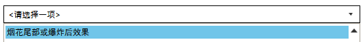
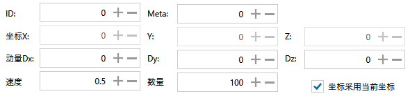
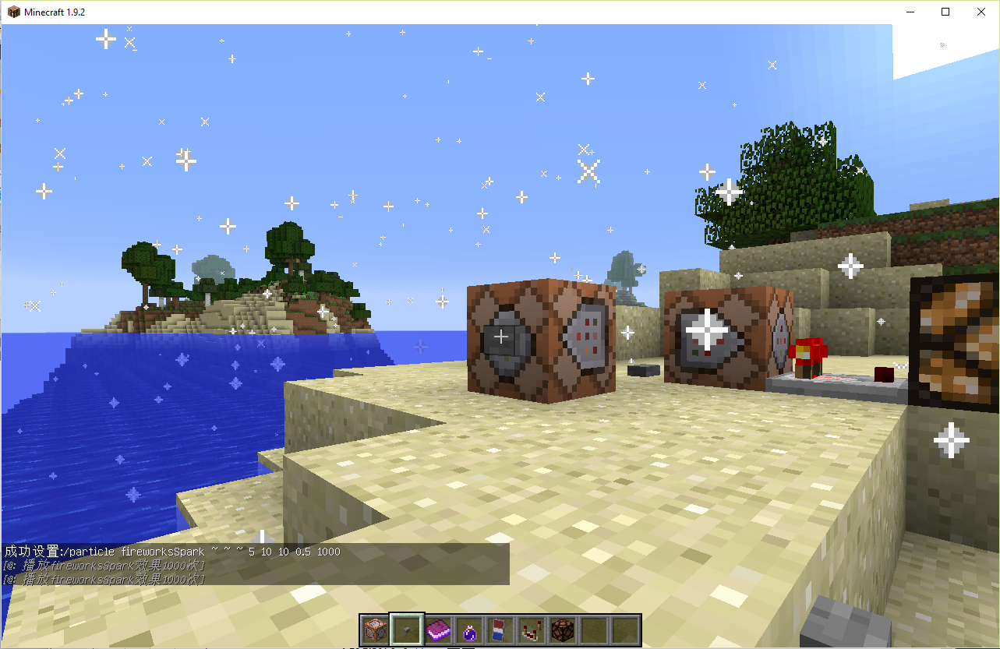

右图则为特效粒子的主要界面，接下来将讲解其内容。
解释文本/内部ID是用于切换选择效果列表内的文本而设计的。
↑这里用来选择想要生成的效果。
 ↑ID和Meta用于图标效果/方块效果所需要的选项。动量则是从坐标XYZ开始朝向动量坐标XYZ的变化。
此处为烟花尾部爆炸的效果。→
/particle fireworksSpark ~ ~ ~ 5 10 10 0.5 1000
特殊功能：当使用reddust/mobSpell或mobSpellAmbient，数量设为0并且速度不是0时，动量XYZ三个参数则控制着他们对应的颜色，reddust有点特殊由于它默认是红色的，所以它的0 0 0对应着红色，-1 1 0对应着绿色，-1 0 1对应着蓝色，以此类推。如果数量大于0，则颜色随机。↓
/particle mobSpellAmbient ~ ~ ~ 2 0.4 1.6 0.8 0 normal @a 0 0
Normal则为普通生成，Force则为强制玩家看到此特效，即使玩家开启了最小量特效显示，选择Force需要指定玩家，如@a选择所有人强制看到此特效。
当选取Normal或Force后，blockdust/iconcrack/blockcrack和fallingdust可以设置显示指定方块/物品的材质，由软件窗口里的ID和Meta控制。